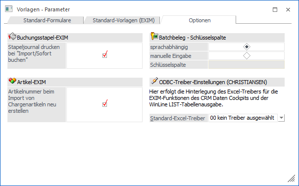
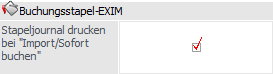
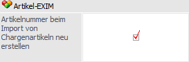
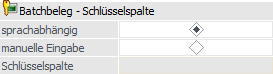
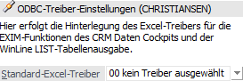

In diesem Register können Spezialeinstellungen für den Ex- und Import definiert werden.

Buchungsstapel-EXIM

Ø Stapeljournal drucken bei "Import/Sofort buchen"
Bei aktivierter Checkbox wird beim Import, bevor der Stapel gebucht wird, das Stapeljournal ausgedruckt. Ist die Checkbox nicht aktiviert, so erfolgt kein Ausdruck des Stapeljournals.
Artikel-EXIM

Ø Artikelnummer beim Import von Chargenartikeln neu erstellen
An dieser Stelle kann der Umgang mit dem internen Chargenzählen definiert werden, wobei die Option im Standard aktiviert ist.
ü Option aktiviert
Ist diese
Checkbox aktiviert, so wird beim Import einer Ausprägung mit Chargeninformation
automatisch eine neue Artikelnummer aufgrund des zuletzt verwendeten
Chargenzählers erzeugt.
Beispiel
Ein neuer Artikel CHARGE,04711 wird importiert.
Der interne Chargenzähler beim Hauptartikel ist auf 815; die Artikelnummer wird auf CHARGE,00816 geändert.
ü Option nicht aktiviert
Ist
diese Checkbox NICHT aktiviert, so wird beim Import einer Ausprägung mit
Chargeninformation automatisch die in der Importdatei angegebene Artikelnummer
für den Import verwendet.
Beispiel
Ein neuer Artikel CHARGE,04711 wird importiert.
Der interne Chargenzähler beim Hauptartikel ist auf 815; die Artikelnummer bleibt aber beim Import erhalten und der interne Chargenzähler im Hauptartikel wird auf 4711 gestellt.
Beispiel - Anwendungsfall
In der Filiale werden Ausprägungen angelegt und die Artikel zusammen mit den Belegen in die Zentrale mittels Batchbeleg importiert. Da beim Artikelimport bisher die Artikelnummer neu erstellt wurde, musste vor dem Batchbeleg die Beleg-Importdatei mit den neuen Artikelnummern überarbeitet werden. Dies ist nun nicht mehr notwendig.
Batchbeleg - Schlüsselspalte

Ø sprachabhängig / manuelle Eingabe / Schlüsselspalte
An dieser Stelle kann hinterlegt werden, ob die Bezeichnung der Schlüsselspalte des Batchbelegs sprachabhängig sein soll.
Wird ein Wert vorbelegt, so ist es egal in welcher Sprache der Batchbeleg vorgenommen wird. Dieser hinterlegte Wert wird dann beim Ex- oder Import eines Belegs anstelle des Begriff "Belegkey" verwendet.
Hinweis
Bei Änderung der Schlüsselspalte müssen ggfs. existierende Webservice-Vorlagen für Belege neu gespeichert werden. Hierauf wird auch in Form eines Hinweises aufmerksam gemacht.
ODBC-Treiber-Einstellungen

Ø Standard-Excel-Treiber
Der hier gewählte ODBC-Treiber wird bei den Exportfunktionen des CRM Daten Cockpits (Button "Export") und der WinLine Tabelle verwendet. Dieser Eintrag wird pro Arbeitsplatz gespeichert, aus welchem Grund auch die Bezeichnung des aktuellen Rechners im Fenster angezeigt wird.
Hinweis
Wurde kein Treiber gewählt, so verwendet die WinLine automatisch einen der zur Verfügung stehenden Treiber.